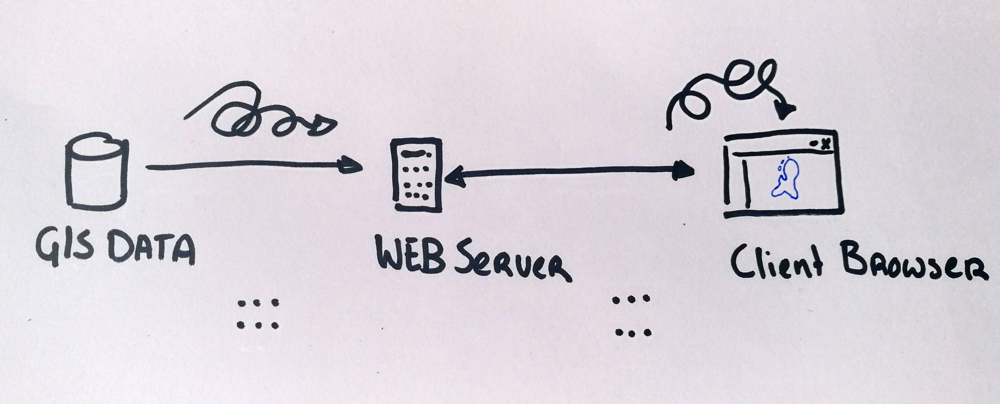
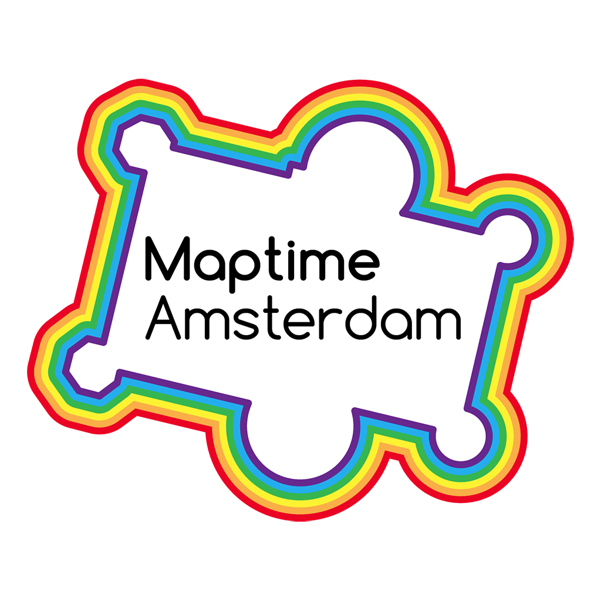

van informatie tot visualisatie
Deze presentatie:
github.com/NieneB/has_college
Veel links, blogs, voorbeelden, etc.! Dus klik mee

Over mijzelf - 2 uur
Niene Boeijen
Kunstacademie - Propaedeuse
Avans Hogeschool Den Bosch
MSc Geo Information Science


ArcMap gedrochten...

Stage Geo Web Visualisatie
"Als je maar geen Microsoft Word gebruikt! .. "
"Hoe dan?"
Markdown gaan leren

Veel tools, niet 1 antwoord
Programmeren is méér vrijheid!
Nu ben ik
Web Cartograaf
Bij Webmapper

Bij Webmapper
Elke dag programmeren..
& creatief bezig zijn


Bij Webmapper
Open Source
Open Data
Open standaarden
Wat moet je kunnen als
[[Web]] Cartograaf
Tegenwoordig is een kaart niet meer een plat op papier maar vaak dynamisch, interactief en online!


There has never been more open data available than at this moment in time, and everyone from global NGOs to armchair hobbyists are using that data to create maps. [source]
Cartografie is geen niche meer:[source]
- Big data
- Massaconsumptie
- Open source sofware
- Open data
Web Mapping
- Interactie
- User-Experience
- Animatie
The realization of the interactive map as an experience, not just a map design.[source]
Good Reads
The future of maps: Cartography in the 21st century 39 studies about human perception in 30 minutesWeb Mapping
- snelheid en schaalbaarheid
- Data-gestuurd
- Responsive ontwerp
- Gepersonaliseerd


Cartography is the new code.
 [source]
[source]
Vaardigheden
You need to be able to find, manipulate, and store spatial and non-spatial data. You need to be able to design a functional and attractive cartographic representation of that data as well as the UI controls to operate it. You need to be able to implement that design through code.[source: Axis Maps]
van Cartograaf naar ..
Data-analist / GIS-specialist
Full-stack ontwikkelaar
Interactie-ontwerper (IX)
User Experience-ontwerpter (UX)
 [source]
[source]
... the demand for cartographers is projected to grow nearly 30 percent by 2024.[source]
Een kaart is een collectie van data.
Het Web Map Universum
Poging tot..

Technieken in
Het Web Map Universum!
Data Design Code
Even testen..
Geo-data
Projecties
Desktop GIS(ArcGIS , Qgis)
HTML, CSS, JS
Web maps - Leaflet - raster tegels
GeoJSON format
Web Map Services (WMS / WFS)
Geo databases - Postgis
Vector tegels
Van Data naar het Web
Doel >> Functionaliteit >> Mapping Technologie >> Design
Data Code Design
- Laad de data
- Maak dingen werkend
- Maak dingen mooi
Doel?
Veel manieren om geo-data op het web te krijgen!
- Interactieve/statische web map
- Web GIS applicatie
- WMS/WFS
- Download link
- Animated, real time
- Collaborative web maps
- Online atlasses
- Infographic, plaatje, video, gif
everything is related to everything else, but near things are more related than distant thingsTobler's first law of geography
Power of Maps
Our brains organise by location
We have no choice but to think and see spatially [1]
What is Geo Data ?
Maps = Collection of Geo data
Maps organise complex data about the environment.
Reveal patterns and relationships.
Maps allow us to communicate about location using a common framework
Beyond Bertin
Design


Cartografie?!
- Grafisch & Cartografisch ontwerp
- UX design
- Film tropes storytelling concepten
- Gestalt
Inhoud
- Gegevenseigenschappen
- Grafische variabelen
- Tropes
- Gestalt
- Map components
daarna zelf aan de slag!
Paar tips!
1. Gebruik Géén Defaults!
2. Een kaart is méér dan alleen de kaart. Alles eromheen verteld ook het verhaal.
3. Een polygoon hoeft geen polygoon te zijn, een lijn geen lijn, een punt geen punt...
4. Ben creatief! Probeer eens wat anders.

5. Error & trial
Verre toekomst? ..
 [source]
[source]
nieneb.github.io/web_map_universe/
Samenvatting
De nieuwe cartograaf
Data Design Code
Web Map Universum
Voorbeelden uit het werkveld
Toekomst
Kom langs!
Bedankt!
niene@webmapper.net
@BNiene